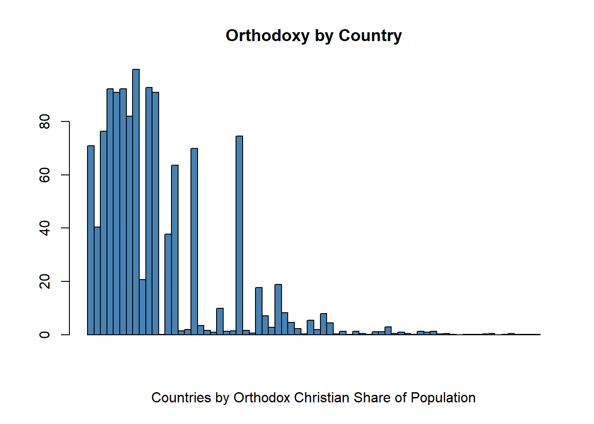
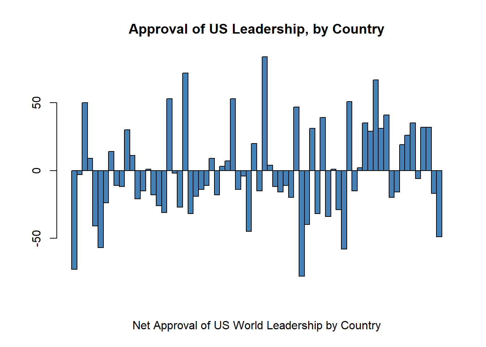
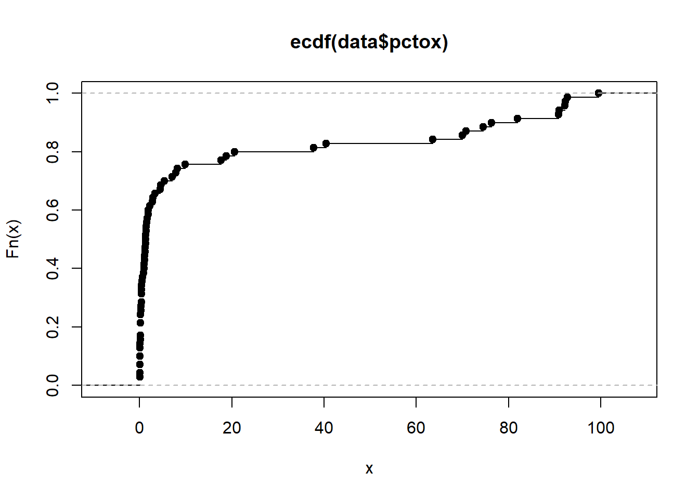
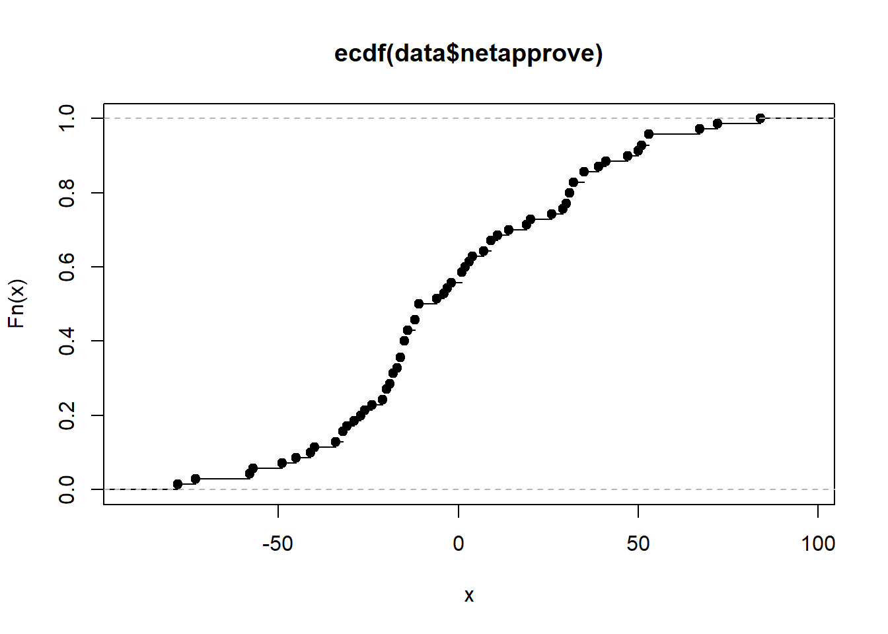
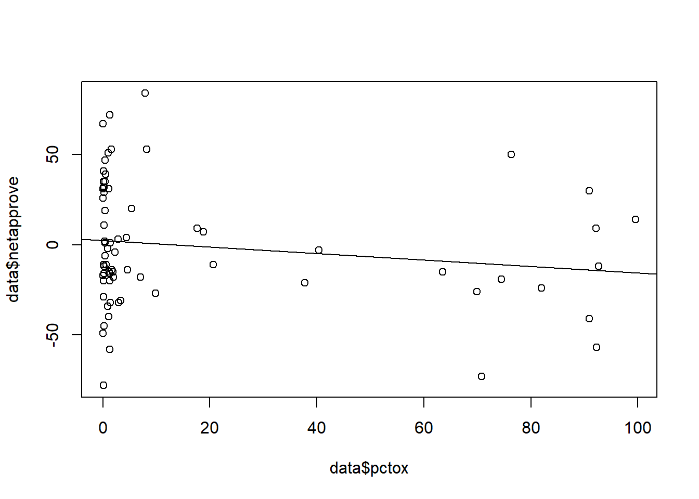

Code
library(tidyverse)
knitr::opts_chunk$set(echo = TRUE)Matt Eckstein
July 10, 2023
Rows: 70 Columns: 15
-- Column specification --------------------------------------------------------
Delimiter: ","
chr (5): Country, Estimated 2010
Catholic Population, Estimated 2010
Protest...
dbl (8): bordru, bordua, bordruua, pctox, approve, disapprove, dkref, netapp...
num (2): Estimated 2010
Orthodox Population, totalpop
i Use `spec()` to retrieve the full column specification for this data.
i Specify the column types or set `show_col_types = FALSE` to quiet this message.



The probability density plot of countries by the shares of their populations that identify as Orthodox Christian is notably right-skewed (and the CDF plot of countries by percent Orthodox Christian has many points clustered at the left edge, near the zero value of the horizontal axis) because the distribution of Orthodoxy throughout the world is highly uneven. Only a few countries, mostly in Eastern Europe, have high percentages of their populations that identify with Orthodoxy, while considerably more countries have small minorities consisting of less than two percent of their populations that identify with Orthodoxy.
On the other hand, the plots of net approval by country of US leadership indicate a more even distribution, with a handful of countries where US leadership is extremely popular, a handful where it is extremely unpopular, and many others in between where public opinion towards US leadership is mixed.
# Create a vector to store the oxbucket values
oxbucket <- character(length(data$pctox))
# Assign values to oxbucket based on pctox
oxbucket[data$pctox < 2] <- "<2%"
oxbucket[data$pctox >= 2 & data$pctox < 5] <- "2-5%"
oxbucket[data$pctox >= 5 & data$pctox < 10] <- "5-10%"
oxbucket[data$pctox >= 10 & data$pctox < 25] <- "10-25%"
oxbucket[data$pctox >= 25 & data$pctox < 50] <- "25-50%"
oxbucket[data$pctox >= 50 & data$pctox < 75] <- "50-75%"
oxbucket[data$pctox >= 75 & data$pctox < 100] <- "75-100%"
# Add the oxbucket variable to the data frame
data$oxbucket <- oxbucketgap <- border$mean_net_approval - noborder$mean_net_approval
gap_se <- sqrt(border$SD_net_approval^2 / border$number + noborder$SD_net_approval^2 / noborder$number)
gap_ci_l <- gap - 1.96 * gap_se
gap_ci_u <- gap + 1.96 * gap_se
result <- cbind(border[,-1], noborder[-(1:2)], gap, gap_se, gap_ci_l, gap_ci_u)
print(result, digits = 3) Percent_orthodox mean_net_approval SD_net_approval number mean_net_approval
1 10-25% 1.67 11.0 3 -15.4
2 2-5% 3.00 NA 1 -12.0
3 5-10% 20.00 NA 1 23.0
4 50-75% -73.00 NA 1 -20.0
5 75-100% 15.25 25.8 4 -23.0
6 <2% 1.50 38.8 8 2.5
SD_net_approval number gap gap_se gap_ci_l gap_ci_u
1 16.02 5 17.1 9.58 -1.71 35.8
2 12.73 2 15.0 NA NA NA
3 54.17 4 -3.0 NA NA NA
4 5.57 3 -53.0 NA NA NA
5 37.82 4 38.2 22.88 -6.59 83.1
6 34.66 34 -1.0 14.95 -30.30 28.3
The plot of countries by the percentages of their populations that identify as Orthodox Christian vs. their levels of net approval of US leadership has a regression line with a slope of -0.1798, demonstrating a slight negative relationship between the shares of countries’ populations that identify as Orthodox and their levels of net approval of US leadership.
---
title: "Class Project Assignment 1"
author: "Matt Eckstein"
desription: "Religious Identification as Orthodox Christian vs. Approval of US Leadership in the World"
date: "07/10/2023"
format:
html:
toc: true
code-fold: true
code-copy: true
code-tools: true
categories:
- hw1
- challenge1
- my name
- dataset
- ggplot2
---
```{r}
#| label: setup
#| warning: false
library(tidyverse)
knitr::opts_chunk$set(echo = TRUE)
```
# Loading packages and reading in data
```{r}
library(dplyr)
library(readxl)
data <- read_csv("Eckstein_data/Orthodoxy_and_US_leadership_cleaned.csv")
data$pctox <- data$pctox * 100
```
# Plotting probability and cumulative density functions for variables
```{r}
#Probability distribution of percent Orthodox by country
probability <- data$pctox
barplot(probability,
xlab = "Countries by Orthodox Christian Share of Population",
col = "steelblue",
space = 0,
main = "Orthodoxy by Country")
#Probability distribution of net approval by country
probability2 <- data$netapprove
barplot(probability2,
xlab = "Net Approval of US World Leadership by Country",
col = "steelblue",
space = 0,
main = "Approval of US Leadership, by Country")
#Cumulative distribution of the percentage of Orthodox Christians by country
plot(ecdf(data$pctox))
#Cumulative distribution of the net approval rating by country of US leadership in the world
plot(ecdf(data$netapprove))
```
The probability density plot of countries by the shares of their populations that identify as Orthodox Christian is notably right-skewed (and the CDF plot of countries by percent Orthodox Christian has many points clustered at the left edge, near the zero value of the horizontal axis) because the distribution of Orthodoxy throughout the world is highly uneven. Only a few countries, mostly in Eastern Europe, have high percentages of their populations that identify with Orthodoxy, while considerably more countries have small minorities consisting of less than two percent of their populations that identify with Orthodoxy.
On the other hand, the plots of net approval by country of US leadership indicate a more even distribution, with a handful of countries where US leadership is extremely popular, a handful where it is extremely unpopular, and many others in between where public opinion towards US leadership is mixed.
# Creating buckets by which to group data, to facilitate the data grouping step
```{r}
# Create a vector to store the oxbucket values
oxbucket <- character(length(data$pctox))
# Assign values to oxbucket based on pctox
oxbucket[data$pctox < 2] <- "<2%"
oxbucket[data$pctox >= 2 & data$pctox < 5] <- "2-5%"
oxbucket[data$pctox >= 5 & data$pctox < 10] <- "5-10%"
oxbucket[data$pctox >= 10 & data$pctox < 25] <- "10-25%"
oxbucket[data$pctox >= 25 & data$pctox < 50] <- "25-50%"
oxbucket[data$pctox >= 50 & data$pctox < 75] <- "50-75%"
oxbucket[data$pctox >= 75 & data$pctox < 100] <- "75-100%"
# Add the oxbucket variable to the data frame
data$oxbucket <- oxbucket
```
# Grouping data by variables of interest, obtaining mean and standard deviation
```{r}
avgs <- data %>%
group_by(bordruua, oxbucket) %>%
summarize(mean(netapprove),
sd(netapprove),
n())
```
# Splitting variables by category
```{r}
border <- avgs %>% dplyr::filter(bordruua == 1)
noborder <- avgs %>% dplyr::filter(bordruua == 0)
```
# Renaming columns
```{r}
colnames(border) <- c("Border_war", "Percent_orthodox", "mean_net_approval", "SD_net_approval", "number")
colnames(noborder) <- c("Border_war", "Percent_orthodox", "mean_net_approval", "SD_net_approval", "number")
```
# Estimating gaps
```{r}
gap <- border$mean_net_approval - noborder$mean_net_approval
gap_se <- sqrt(border$SD_net_approval^2 / border$number + noborder$SD_net_approval^2 / noborder$number)
gap_ci_l <- gap - 1.96 * gap_se
gap_ci_u <- gap + 1.96 * gap_se
result <- cbind(border[,-1], noborder[-(1:2)], gap, gap_se, gap_ci_l, gap_ci_u)
print(result, digits = 3)
```
# Plot
```{r}
plot(data$pctox,
data$netapprove,
type = "p",
main = "Countries: Percent Orthodox Christian vs. Net Approval of US Leadership",
cex.main = 1,
xlab = "Percent Orthodox",
ylab = "Net Approval of US Leadership",
col = "steelblue",
pch = 19)
```
# Regression
```{r}
model <- lm(data$netapprove ~ data$pctox)
plot2 <- plot(data$netapprove ~ data$pctox)
abline(a = 2.438959, b = -0.1798092)
```
The plot of countries by the percentages of their populations that identify as Orthodox Christian vs. their levels of net approval of US leadership has a regression line with a slope of -0.1798, demonstrating a slight negative relationship between the shares of countries' populations that identify as Orthodox and their levels of net approval of US leadership.